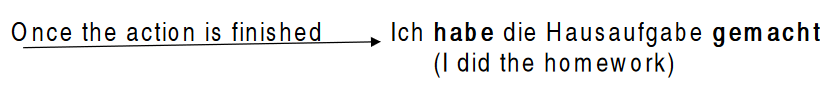
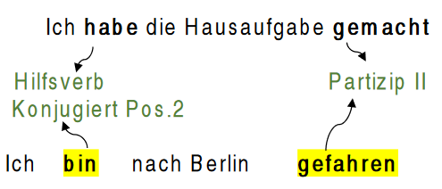
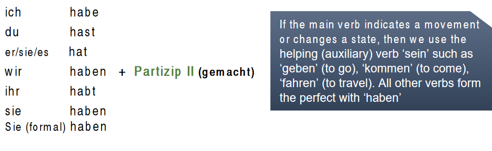
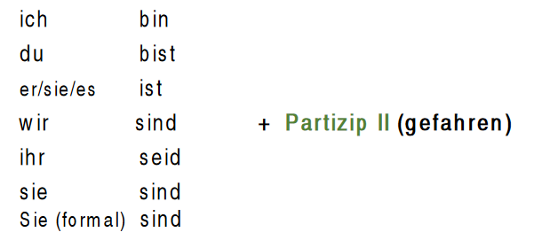
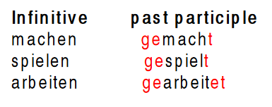

The perfect tense – Das Perfekt
We use the perfect tense as the past simple in English, when we talk about a
completed action. It is commonly used in spoken language.
e.g
Präsens (present): Ich mache die Hausaufgabe (I do the homework)

How to form it?
We use the verbs ‘haben’ and ‘sein’ as auxiliary or helping verbs conjugated at the second position and ‘Partizip II’ (past participle of the verb) at the end of a clause or a sentence

We use the conjugation of the verbs ‘haben’ and ‘sein’ in the present tense form as we have seen in lesson of Verbs: haben and sein.
konjugation präsens: Verb haben

konjugation präsens: Verb sein

How to form ‘Partizip II’ (the past participle)?
As you have seen in the lesson of Verbs, some verbs are regular and some are irregular.
- With regular verbs: add ‘ge-‘ at the beginning of the verb stem and ‘-t’ at the end. If the verb stem ends with ‘-t’, add ‘et’

- Verbs that end in ‘-ieren‘ such as ‘telefonieren‘ (to call) we add only ‘-t’ to the end of the verb stem.
telefonieren telefoniert
informieren informiert